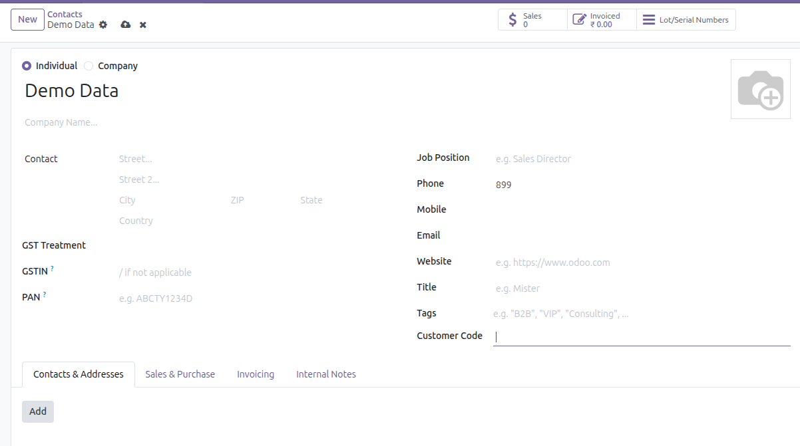
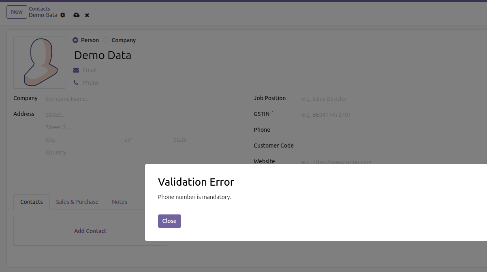
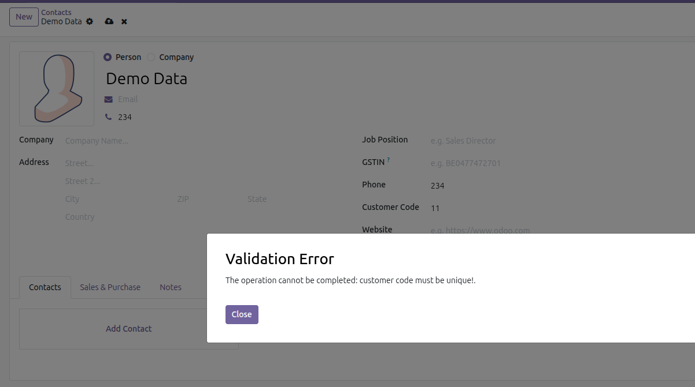

Inom Customer Code & Mandatory Phone Number module enhances Odoo Contacts by enforcing structured customer identification and mandatory contact information. This module ensures every customer record has a unique Customer Code and a valid Phone Number before saving.
By enforcing these validations, businesses can maintain clean master data, avoid duplicate or incomplete customer records, and improve operational accuracy across Sales, Accounting, and CRM.
Missing customer codes or phone numbers often lead to data inconsistency, duplicate records, and communication issues. This module guarantees that each customer is properly identified and reachable before being saved.
1. Open or create a Contact (Customer).
2. Enter a unique Customer Code.
3. Enter a valid Phone Number.
4. Save the record — validation ensures no duplicates or empty values.
5. If validation fails, a clear warning message is shown.
Below are example screenshots showing the module behavior.



For support, bug reports, or customization requests, please contact us:
Email: info@inomerp.in
We provide a one-time setup and installation service completely free of cost on any Odoo-supported server. Our experienced technical team ensures proper installation, configuration, and deployment so you can start using the module smoothly without any technical complications.
Important Note:
Free support is provided for issues caused by the standard Odoo source code
related to this module. Any issues arising due to third-party modules,
custom developments, or compatibility conflicts are outside the scope of
free support and may be chargeable.
For demos, customization, or enterprise support, connect with our team:
https://www.inomerp.in/contactus